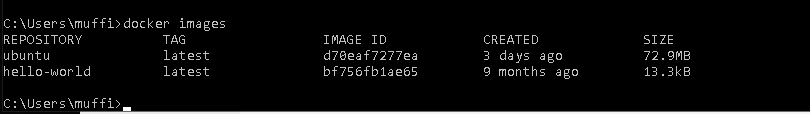
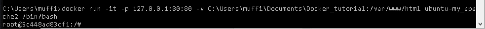
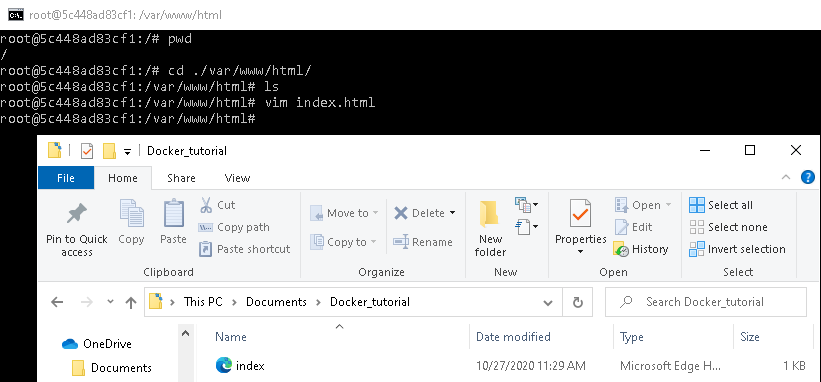

Step 2 is to pull an Ubuntu image from Dockerhub. Running the command "docker pull ubuntu" will do the trick. Type "docker images" after pulling to verify that an image was pulled.
Step 3 is to configure the image. Type "docker run -it ubuntu:latest /bin/bash". Upon logging in perform an update by typing "apt-get update". Install Apache2 by typing "apt-get install apache2". Install vim by typing "apt-get vim". At this point you will have a blank template image ready for hosting web servers. Type "exit" to commit the changes.

Step 4 is to share the data between your docker container and your host system. Type the command "docker run -it -p 127.0.0.1:80:80 -v H:\Docker_tutorial\local_dir:/var/www/htmlubuntu-my_apache2 /bin/bash". The 127 ip address is where your local host will display the webpage. The "H" drive location should be replaced with the absolut path of your choice depending on where you want to store your webpage's files.
Step 5 is to create and populate your index page. You will first have to go to the proper directory which can be reached by typing "cd /var/www/html/". Now you will want to type "vim index.html". This will open a text file where you can type html code to display on your webpage.
